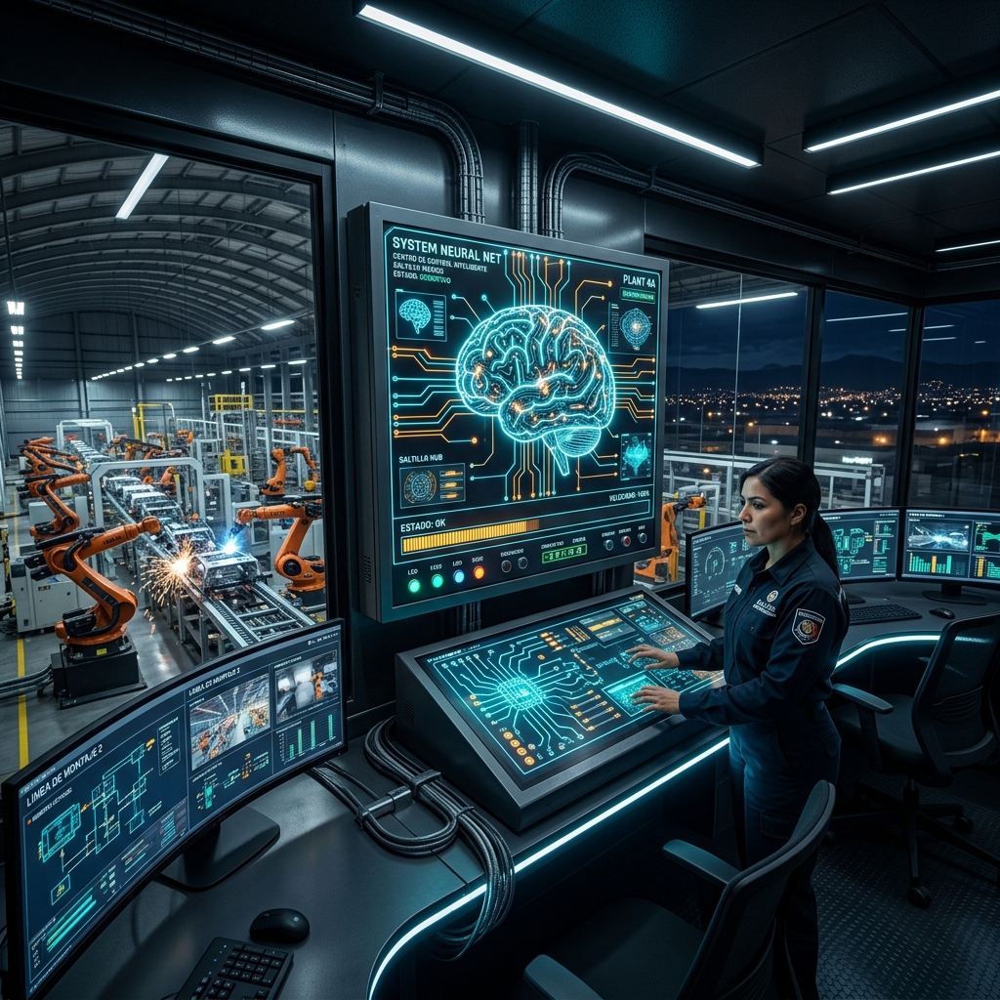

El Cerebro Lógico de la Planta: Guía de Programación de PLC e Integración en Saltillo
Publicado por el Equipo de Ingeniería de Robologix Automation | Coahuila, México
Resumen Ejecutivo de Automatización:
En el ecosistema industrial de Saltillo y Ramos Arizpe, el Controlador Lógico Programable (PLC) actúa como el centro de mando y sistema nervioso de la línea de producción. Una lógica bien desarrollada coordina con precisión milimétrica la interacción entre servomotores, celdas robóticas y sensores. Invertir en una programación modular y profesional es la estrategia más efectiva para incrementar la disponibilidad operativa, agilizar la detección de fallas y garantizar el cumplimiento de metas de producción.

Visualización del controlador PLC como núcleo inteligente de control en planta automatizada.
1. El Núcleo Inteligente que Dirige la Manufactura
En las naves industriales dedicadas al estampado, ensamble y formado en Coahuila, cada componente físico requiere una instrucción precisa en tiempo real. El PLC procesa miles de señales de entrada por segundo para enviar comandos inmediatos a los actuadores.
Sin un código estructurado adecuadamente, incluso la maquinaria de última generación sufre de microparos, demoras en el ciclo y dificultades de diagnóstico. En Robologix Automation desarrollamos soluciones de lógica limpia que convierten la complejidad técnica en un flujo continuo y confiable.
2. Beneficios de una Arquitectura de Lógica Profesional
- Estabilidad y Continuidad de Proceso: La programación estandarizada reduce las interrupciones imprevistas y facilita que el personal de mantenimiento localice la causa raíz de cualquier falla en cuestión de segundos.
- Sincronización y Reducción del Tiempo de Ciclo: Al estructurar rutinas optimizadas en el bus de campo, la línea ejecuta sus pasos en la secuencia más rápida posible sin comprometer la seguridad del equipo.
- Protección y Seguridad de Personal (Safety): Integración de funciones de interlock y controladores de seguridad (GuardLogix, SIMATIC Safety) para detener la maquinaria instantáneamente ante cualquier condición de riesgo.
- Adaptabilidad para Nuevos Modelos: Código modular que permite reconfigurar estaciones de trabajo o añadir nuevos números de parte de manera rápida y sin rehacer el sistema desde cero.
- Conexión a Sistemas de Telemetría (SCADA/MES): El PLC envía métricas precisas a pantallas HMI y bases de datos para monitorear el desempeño global de la planta en tiempo real.
3. Cobertura Multimarca para la Región de Saltillo
Desarrollamos, migramos e integramos lógica en las plataformas de automatización más importantes de la industria:
Allen-Bradley / Rockwell
Studio 5000 Logix Designer, ControlLogix 5580, CompactLogix 5380 y FactoryTalk View.
Siemens SIMATIC
TIA Portal V14-V19, S7-1500, S7-1200, pantallas WinCC y redes PROFINET.
Omron & Mitsubishi
Sysmac Studio (NJ/NX), iQ-R Series y protocolos de red ethernet industrial.
Tu Socio Tecnológico en Automatización
Diseño de programas estructurados que facilitan el diagnóstico rápido al personal de turno.
Integración transparente entre el PLC maestro y robots FANUC, KUKA, ABB y Yaskawa.
Presencia directa en los parques industriales de Saltillo, Ramos Arizpe y Arteaga.
Artículos Técnicos Relacionados:
¿Requieres Optimizar o Desarrollar la Lógica de Control de tu Planta?
En Robologix Automation te ayudamos a asegurar la máxima disponibilidad operativa de tus PLCs en Saltillo y Ramos Arizpe.
Hablar con un Especialista de Robologix